DESCRIZIONE - Gli amuleti sono oggetti magici aventi principalmente funzione di protezione. Per essere utilizzati gli amuleti magici devono essere necessariamente indossati intorno al collo attraverso l'uso di una collana. Il tipo di collana utilizzato per indossare l'amuleto influisce solo sul valore estetico dello stesso non incidendo in alcun modo sul potenziale magico dell'oggetto. Ogni creatura può indossare intorno al collo un unico amuleto magico. Qualora una creatura indossi più di un amuleto il potenziale magico degli amuleti andrà in conflitto neutralizzandosi fino a che tale situazione permarrà (gli amuleti continueranno a risultare incantati ma il loro potere magico sarà sospeso). In questo caso verrà anche interrotto il legame magico personale tra la creatura e tutti gli amuleti indossati.
Ogni
volta che chi indossa un amuleto magico subisce
un critico al
collo (non quindi un
critico al torace) vi è il
33% di possibilità che l'amuleto
sia stato colpito dovendo
superare un tiro salvezza
contro rottura pari ad 9.
Questo tiro va ripetuto per ogni amuleto indossato al collo da chi ha subito il
critico.
LEGAME MAGICO PERSONALE
- Caratteristica di tutti
gli amuleti è rappresentata dalla circostanza che il loro potere magico ha
effetti costanti sulla creatura che li indossa senza che sia richiesta alcuna
forma di attivazione. L'amuleto però necessita la creazione di un legame magico
personale con chi lo indossa, per tale motivo gli effetti magici del suo
incantamento saranno applicati costantemente al soggetto che indossa l'amuleto
solo dopo che costui lo abbia
indossato ininterrottamente per dieci giorni.
Nel caso in cui l'amuleto magico venga rimosso per un periodo superiore ad un
turno, i benefici saranno ottenuti
nuovamente solo dopo che il soggetto abbia indossato nuovamente l'amuleto per
dieci giorni.
|
COMMON MAGICAL ITEM 1d20 |
RARE MAGICAL ITEM 1d20 |
AMULETO MAGICO |
| 1 | 1 | Amuleto Maledetto |
| 2 - 9 [1d8] | 2 - 9 [1d8] | Minor Enchantment o Superior Minor Enchantment |
| 1-3 [1d8: 1-2] | 1-3 [1d10: 1-2] | Lesser Leaf of Life - ARLINIR |
| 1-3 [1d8: 3-4] | 1-3 [1d10: 3-4] | Amulet of Life Preservation - ARLINIR |
| 1-3 [1d8: 5-6] | 1-3 [1d10: 5-8] | Leaf of Life - ARLINIR |
| 1-3 [1d8: 7-8] | 1-3 [1d10: 8-10] | Superior Amulet of Life Preservation - ARLINIR |
| 4 | 4 | Amulet Against Disease +5% |
| 5 | 5 | Amulet Against Magic +5% |
| 6 | 6 | Amulet of Mind +5% |
| 7 | 7 | Amulet of Life Energy +5% |
| 8 | 8 | Amulet Against Posion +5% |
| 10 - 15 [1d12] | 5 - 7 [1d12] | Greater Minor Enchantment |
| 1 | 1 | Amulet Against Disease +10% |
| 2 | 2 | Amulet Against Magic +10% |
| 3 | 3 | Amulet of Mind +10% |
| 4 | 4 | Amulet of Life Energy +10% |
| 5 | 5 | Amulet Against Posion +10% |
| 6 | 6 | Amulet of Creature Protection |
| 7-8 [1d6: 1-2] | 7-8 [1d6: 1-2] | Greater Leaf of Life - ARLINIR |
| 7-8 [1d6: 3-4] | 7-8 [1d6: 3-4] | Greater Amulet of Life Preservation - ARLINIR |
| 7-8 [1d6: 5-6] | 7-8 [1d6: 5-6] | Amulet of Elven Physical Integrity - ARLINIR |
| 9 | 9 | Amulet of Fish Protection - ERAM |
| 10 | 10 | Amulet of Serpent Protection - IL SERPENTE |
| 11 | 11 | Amulet of Lesser Devourer - AZATAR |
| 12 | 12 | Amulet of Magic Resistance 5% |
| 16 - 19 [1d20] | 8 - 16 [1d20] | Lesser Enchantment |
| 1 - 2 | 1 - 2 | Amulet Against Disease +15% |
| 3 - 4 | 3 - 4 | Amulet Against Magic +15% |
| 5 - 6 | 5 - 6 | Amulet of Mind +15% |
| 7 - 8 | 7 - 8 | Amulet of Life Energy +15% |
| 9 - 10 | 9 - 10 | Amulet Against Posion +15% |
| 11 - 12 | 11 - 12 | Amulet of Aging Protection - ARLINIR |
| 13 | 13 | Amulet of Calm |
| 14 | 14 | Amulet of Beast Suppression |
| 15 - 16 | 15 - 16 | Amulet of Learning - LOKY |
| 17 - 18 | 17 - 18 | Amulet of Life Protection - ARLINIR |
| 19 - 20 | 19 - 20 | Amulet of Magic Resistance 5% |
| 20 [1d20] | 17 - 20 [1d20] | Superior Enchantment |
| 1 - 3 | 1 - 3 | Amulet Against Disease +20% |
| 4 - 6 | 4 - 6 | Amulet Against Magic +20% |
| 7 - 9 | 7 - 9 | Amulet of Mind +20% |
| 10 - 12 | 10 - 12 | Amulet of Life Energy +20% |
| 13 - 15 | 13 - 15 | Amulet Against Posion + 20% |
| 16 | 16 | Amulet of Detect Protection |
| 17 - 18 | 17 - 18 | Amulet of Magic Resistance 15% |
| 19 | 19 | Amulet of Magic Resistance 20% |
| 20 | 20 | Amulet of Magic Resistance 25% |
| OGGETTO | Amulet Against Disease | ||||||||||||||||||||
| ORIGINE | MAGICA - ABJURATION | ||||||||||||||||||||
| POTENZA | Variabile | ||||||||||||||||||||
|
DESCRIZIONE
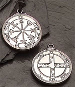 |
Questo amuleto di argento
riportante incisioni di rune magiche protettive protegge
costantemente chi lo indossa dalle malattie. In particolare l'amuleto
conferisce costantemente a chi lo indossa un
bonus
a qualsiasi tiro salvezza contro malattia costui deve effettuare (tale
beneficio si applica anche ai tiri salvezza effettuati nelle varie fasi
della malattia da chi si sia ammalato). L'incantamento degli amuleti di
protezione contro la malattia può essere di varia potenza come indicato
nella seguente tabella donando a chi li indossa un
bonus
al tiro salvezza su malattia che varia da +5% a +20%.
|
| OGGETTO | Amulet Against Magic | ||||||||||||||||||||
| ORIGINE | MAGICA - ABJURATION | ||||||||||||||||||||
| POTENZA | Variabile | ||||||||||||||||||||
|
DESCRIZIONE
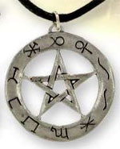 |
Questo amuleto d'argento dalla
forma circolare che circoscrive un pentacolo protegge
costantemente chi lo indossa dalla magia. In particolare l'amuleto
conferisce costantemente a chi lo indossa un
bonus
a qualsiasi tiro salvezza su magia costui deve effettuare. L'incantamento degli amuleti di
protezione contro la magia può essere di varia potenza come indicato
nella seguente tabella donando a chi li indossa un
bonus
al tiro salvezza su magia che varia da +5% a +20%.
|
| OGGETTO | Amulet of Mind | ||||||||||||||||||||
| ORIGINE | MAGICA - ABJURATION | ||||||||||||||||||||
| POTENZA | Variabile | ||||||||||||||||||||
|
DESCRIZIONE
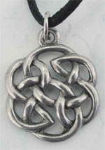 |
Questo amuleto d'argento dalla
forma di un intreccio circolare di filamenti protegge
costantemente la mente di chi lo indossa. In particolare, l'amuleto
conferisce costantemente a chi lo indossa un
bonus
a qualsiasi tiro salvezza su mente costui deve effettuare.
L'incantamento degli amuleti di protezione della mente può essere di varia potenza come indicato
nella seguente tabella donando a chi li indossa un
bonus
al tiro salvezza su mente che varia da +5% a +20%.
|
| OGGETTO | Amulet of Life Energy | ||||||||||||||||||||
| ORIGINE | MAGICA - ABJURATION | ||||||||||||||||||||
| POTENZA | Variabile | ||||||||||||||||||||
|
DESCRIZIONE
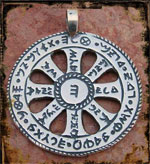 |
Questo amuleto d'argento dalla
forma circolare che circoscrive un sole stilizzato ricoperto da rune
protettive difende
costantemente l'energia vitale di chi lo indossa. In particolare l'amuleto
conferisce costantemente a chi lo indossa un
bonus
a qualsiasi tiro salvezza su energia vitale costui deve effettuare.
L'incantamento degli amuleti di protezione contro i danni all'energia
vitale può essere di varia potenza come indicato
nella seguente tabella donando a chi li indossa un
bonus
al tiro salvezza su energia vitale che varia da +5% a +20%.
|
| OGGETTO | Amulet Against Poison | ||||||||||||||||||||
| ORIGINE | MAGICA - ABJURATION | ||||||||||||||||||||
| POTENZA | Variabile | ||||||||||||||||||||
|
DESCRIZIONE
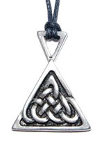 |
Questo amuleto d'argento dalla
forma triangolare difende
costantemente chi lo indossa dall'avvelenamento. In particolare l'amuleto
conferisce costantemente a chi lo indossa un
bonus
a qualsiasi tiro salvezza contro velenocostui deve effettuare.
L'incantamento degli amuleti di protezione contro il veleno può essere di varia potenza come indicato
nella seguente tabella donando a chi li indossa un
bonus
al tiro salvezza contro veleno che varia da +5% a +20%.
|
| OGGETTO | Amulet of Aging Protection |
| ORIGINE | DIVINA - FRATELLANZA DELLA LUCE - ARLINIR (Abjuration) |
| POTENZA | Lesser Enchantment (500 xp, 5000 gp) |
| CARICHE | 20 |
|
DESCRIZIONE 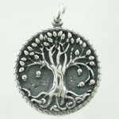 |
Questo amuleto magico
raffigurante un albero è in grado di difendere chi lo indossa da tutte
le forme di invecchiamento non naturali. Ogni volta che, infatti, chi lo
indossa subisce gli effetti di un invecchiamento non naturale, come
quello conseguente all'attacco di determinate creature (come nel caso
del ghost)
o quello che rappresenta l'effetto collaterale di una magia o di un
oggetto magico (si pensi all'incantesimo
Dimensional Folding),
gli anni saranno risucchiati da questo amuleto anziché dalla creatura
che lo indossa. L'amuleto, appena creato, ha 20 cariche ognuna delle
quali è in grado di assorbire l'invecchiamento di un singolo anno. Se,
quindi, un attacco è in grado di produrre un invecchiamento di un
ammontare di anni superiore alle cariche residue dell'amuleto chi lo
indossa invecchierà degli anni restanti non assorbiti dall'oggetto
magico. Si noti che questo amuleto non assorbirà in alcun caso
l'invecchiamento causato dal malfunzionamento delle pozioni magiche del
tipo Potion of Longevity.
Questo amuleto magico non può essere ricaricato ed una volta terminata
l'ultima carica si sgretolerà riducendosi definitivamente in polvere. |
| OGGETTO | Amulet of Calm |
| ORIGINE | MAGICA - ALTERATION |
| POTENZA | Lesser Enchantment (500 xp, 5000 gp) |
| DESCRIZIONE |
Questo amuleto, creato solitamente utilizzando pietre grezze dal colore rilassante, protegge costantemente chi lo indossa da ogni stato involontario di rabbia, ira, furia o simile alterazione caratteriale. In particolare, chi indossa questo amuleto magico, riuscendo a mantenere sempre uno stato di calma e serenità interiore, sarà immune a tutti gli effetti magici o naturali che esaltino il carattere della creatura rendendola furiosa. Chi indossa questo amuleto sarà immune a magie quali Taunt (1° livello di potere, scuola Charm) o ad effetti come quello causato dal colpo speciale di combattimento Provocazione. Se questo amuleto è utilizzato dai Combattenti della classe talentuosa Berserker costoro avranno il 50% di possibilità di non entrare involontariamente nello stato di furia previsto dal talento Furia di Combattimento. Si noti che questo amuleto non impedisce alla creatura di arrabbiarsi volontariamente od entrare in uno stato di furia o d'ira in modo volontario. Qualora una creatura entri volontariamente in uno stato di furia (o qualora fallisca il tiro percentuale in caso di appartenenti alla classe dei Berserker) , però, la creatura dovrà calmarsi ed uscire dallo stato d'ira o di furia in cui ha deciso di entrare regolarmente senza ricevere alcun beneficio dall'amuleto magico. |
| OGGETTO | Amulet of Creature Protection |
| ORIGINE | MAGICA - ABJURATION |
| POTENZA | Greater Minor Enchantment (375 xp, 4500 g.p.) |
|
DESCRIZIONE 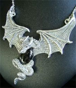 |
Questo amuleto magico protegge
chi lo indossa da una categoria generale di creature. L'amuleto sarà
creato con la forma posseduta dalle creature dal quale lo stesso
difende. Per categoria di creature si intende una categoria generale
come riportata negli incantamenti magici settoriali della scuola
Enchantment. A titolo esemplificativo si consulti la seguente
elencazione: |
| OGGETTO | Amulet of Beast Suppression |
| ORIGINE | MAGICA - ALTERATION |
| POTENZA | Lesser Enchantment (750 xp, 7500 gp) |
|
DESCRIZIONE 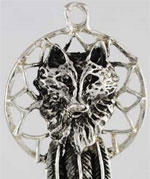 |
Questo amuleto magico ha effetti solo quando indossato da un licantropo infettato (non avendo alcun effetto su licantropi originari). Una volta che questo amuleto è indossato validamente lo stesso riesce a sopprimere l'aspetto bestiale di chi lo indossa impedendo, di fatto, ogni trasformazione in forma ibrida del licantropo infettato. Se indossato dopo che la creatura ha già assunto la forma ibrida l'amuleto non avrà alcun effetto dovendo la creatura prima riassumere il suo aspetto primario normalmente. Si noti che questo amuleto può essere rimosso normalmente non sussistendo alcun impedimento magico alla sua rimozione. |
| OGGETTO | Amulet of Detect Protection |
| ORIGINE | MAGICA - ABJURATION |
| POTENZA | Superior Enchantment (1000 xp, 10000 gp) |
|
DESCRIZIONE 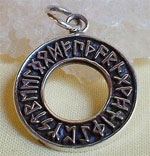 |
Questo amuleto, avente forma circolare con scolpite rune protettive, protegge chi lo indossa da ogni forma di individuazione magica. In particolare, qualsiasi magia delle scuola Divination (sia degli Utenti di Magia che dei Sacerdoti) lanciata sulla creatura che indossa l'amuleto o su un oggetto da costui trasportato fallirà miseramente senza individuare alcunché; magie di della medesima scuola di livello di potere pari o superiore al sesto non saranno però bloccate dall'amuleto. Parimenti fallirà l'utilizzo di oggetti magici divinatori indirizzato sulla persona che indossa l'amuleto o su un oggetto da costui trasportato; effetti magici prodotti da incantamenti aventi valore in punti esperienza pari o superiore a 3000 xp non saranno però bloccati dall'amuleto. Allo stesso modo saranno bloccate le divinazioni effetto di poteri o talenti speciali poste in essere da creature aventi fino ad un ammontare massimo di nove dadi vita/livelli. Si noti che, attivandosi solo dopo la creazione del legame personale con colui che lo indossa, l'amuleto risulterà magico alle magie di individuazione ed identificazione lanciate sullo stesso prima dell'attivazione dei suoi effetti. |
| OGGETTO | Amulet of Learning |
| ORIGINE | DIVINA - FRATELLANZA DELLA LUCE - LOKY (Alteration) |
| POTENZA | Lesser Enchantment (700 xp, 7000 gp) |
|
DESCRIZIONE 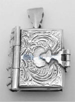 |
Questo amuleto magico creato in metalli preziosi avente la forma di un piccolo libro è in grado di aumentare le capacità di apprendere nuove nozioni di chi lo indossa. In particolare, chi lo indossa riceverà un punto in pratica supplementare ogni volta che ne avrebbe comunemente acquisito un punto. Questo beneficio si applica sia ai punti arma acquisiti con uso in combattimento che ai punti competenza acquisiti in pratica. Chi indossa questo amuleto, inoltre, riceverà un bonus di +1 al dado base (ossia valutabile nel limite del massimale del dado tirato) utilizzato per determinare i punti arma ottenuti in caso di tiro critico effettuato nel corso di un combattimento. Si noti che questo amuleto aiuterà chi lo indossa solo in relazione ai punti acquisiti in pratica non applicandosi alcun beneficio ai punti acquisiti in teoria (ossia quelli ottenuti mediante addestramento o studio). |
| OGGETTO | Amulet of Life Protection |
| ORIGINE | DIVINA - FRATELLANZA DELLA LUCE - ARLINIR (Abjuration) |
| POTENZA | Lesser Enchantment (600 xp, 6000 gp) |
| CARICHE | 5 |
| DESCRIZIONE |
Questo amuleto magico a forma di
foglia è in grado di difendere chi lo indossa dal risucchio di energia
vitale (link). Ogni volta
che, infatti, l'utilizzatore subisce un attacco in grado di risucchiare
la propria energia vitale una carica dell'anello si attiverà e,
consumandosi, dissiperà il risucchio di energia vitale. Questo amuleto
si attiverà automaticamente e la vittima subirà, quindi, solo i normali
danni dell'attacco. L'amuleto ha 5 cariche ed ogni carica è in grado di
neutralizzare una lesione all'energia vitale causata al soggetto. Se,
quindi, un attacco è in grado di produrre più di una lesione l'anello
utilizzerà più cariche per dissiparlo (qualora l'attacco sia assorbito
solo in parte, chi indossa l'amuleto subirà le restanti parti di
risucchio di energia vitale). Questo amuleto magico non può essere
ricaricato ed una volta terminata l'ultima carica si sgretolerà
riducendosi definitivamente in polvere. |
| OGGETTO | Amulet of Magic Resistance | ||||||||||||||||||||||||
| ORIGINE | MAGICA - ABJURATION | ||||||||||||||||||||||||
| POTENZA | Variabile | ||||||||||||||||||||||||
|
DESCRIZIONE
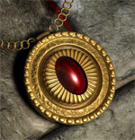 |
Questo amuleto a chi lo indossa
una determinata resistenza alla magia. Si noti che qualora il soggetto
possegga già, per qualsiasi motivo, una resistenza alla magia gli
effetti non si cumuleranno ma sarà applicata solo il migliore valore di
resistenza magica posseduto. L'incantamento degli amuleti di resistenza
alla magia può essere di varia potenza come indicato nella seguente
tabella donando a chi li indossa una
Magic
Resistance che
varia dal 5% al +25%. Trattandosi di una resistenza magica indotta
magicamente, chi indossa questo amuleto non può abbassarla
volontariamente.
|